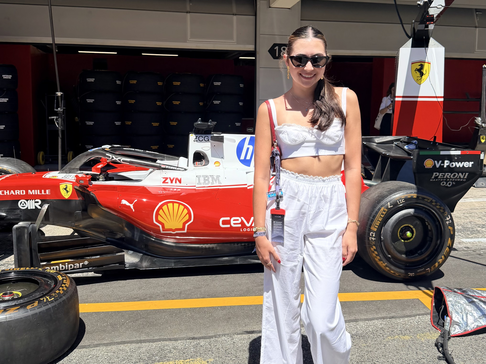
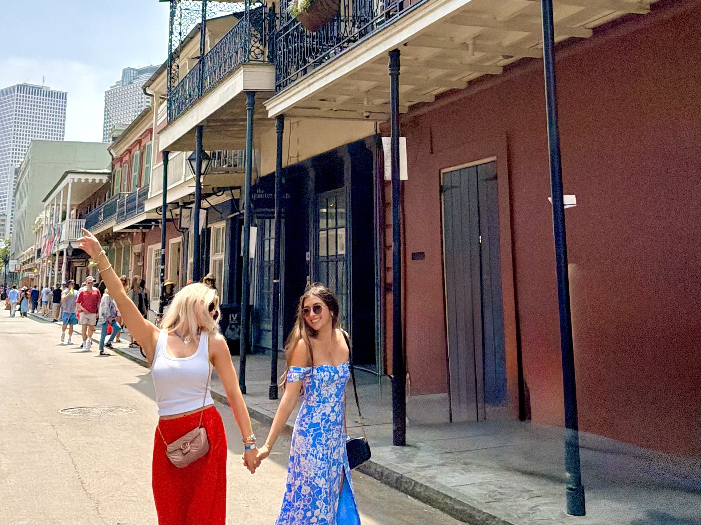
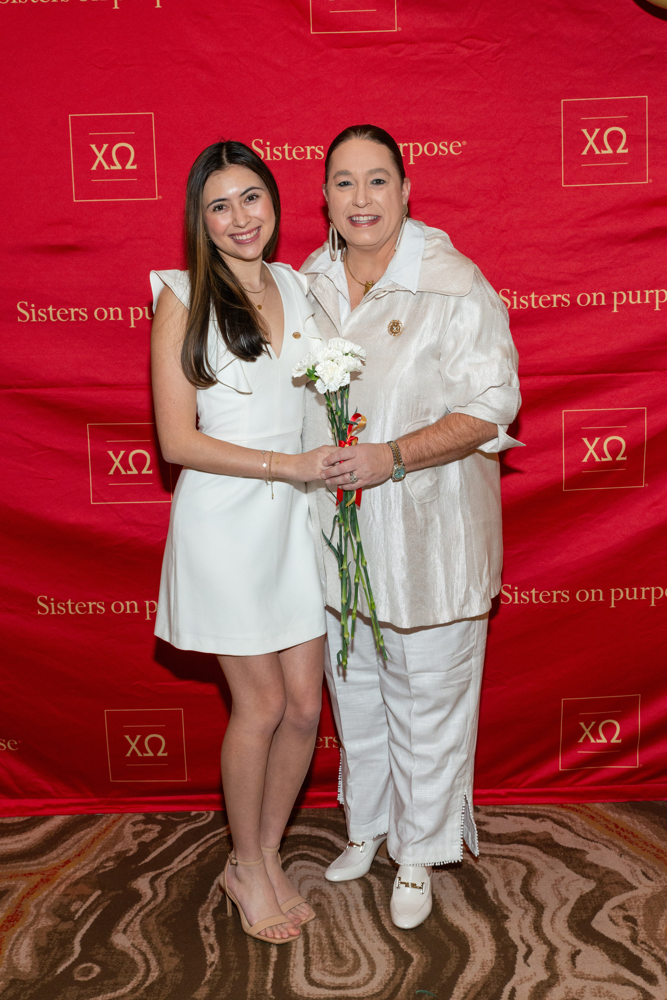
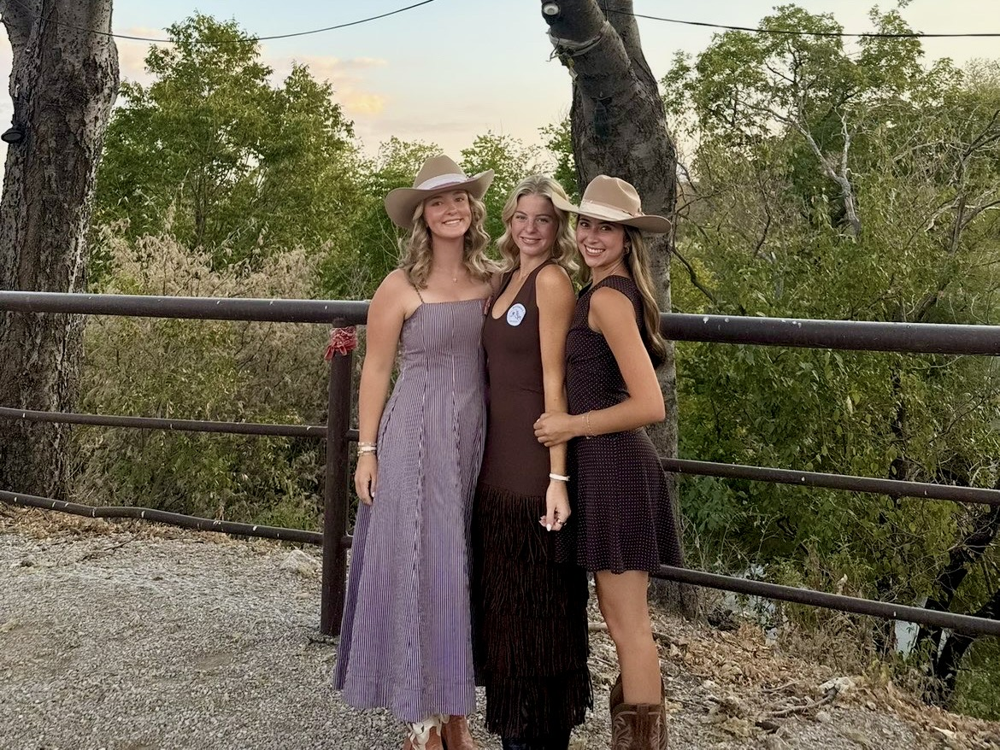

When I’m not in classes or working on projects, this is what you will usually find me doing. Hover over each tile to read more.
Watching Formula One

What other sport demands as much from its engineers as its athletes? Watching the races is thrilling, but the real draw for me is the engineering behind the car. Traveling to two races and speaking with engineers in the garage sparked a deep curiosity for what happens on the backend, from aerodynamic design to real-time data analysis.
Traveling the World

I love immersing myself in different cultures—so far, I’ve visited five continents and fifteen countries. If you want to win me over, take me somewhere tropical. Right now, French Polynesia and The Netherlands are tied for my favorites.
Dance & Choreography
Growing up as a competitive dancer training 20+ hours a week alongside school taught me discipline, time management, and how to handle rejection. While my twenty-year-old body has officially retired from competing, I spend my "5-9 after my 9-5" time during the summer choreographing routines for my high school dance team to perform at football and basketball games. This has been a good way of getting my fix without breaking my back.
Chi Omega

One of the best parts of my college experience has been joining Chi Omega. The women I am surrounded with in this chapter pour into one another immensely, and always push me to be a better leader, learner, and friend. I have grown tremendously in my communication skills and leadership through the positions I’ve held in the chapter as a Regional Model Initiate and as the Hospitality Chair.
Friends & Family

Everyone needs a solid work-life balance, and I’m lucky to have the best people in my corner. Whether we’re having a movie and game night at home, trying a new restaurant, or having a weekend getaway, we’re always up to something fun. They also know that when my "Do Not Disturb" goes on, I mean it—that’s the balance part.